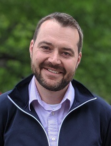
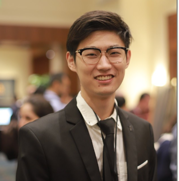

Best Student Paper
Universal Navigation Interface: Robot-Free Data for Wheeled Robot Navigation
Thursday, 1 October 2026 · 1:30 PM – 5:30 PM · Room 317/318 · Half-Day Workshop
Awards were presented during the closing session on 1 October 2026.
Best Student Paper
Universal Navigation Interface: Robot-Free Data for Wheeled Robot Navigation
Best Student Poster
CLPV: Dataset of Controlled Co-Located Lighting and Photometric Variation for Robot Vision
Winner
SE(3)-LIVOM: Adaptive Multi-LiDAR-Inertial-Visual Odometry and Mapping
Runner-Up
BIEVR-LIO: Robust LiDAR-Inertial Odometry through Bump-Image-Enhanced Voxel Maps
3rd Place
EllipseLIO: Adaptive LiDAR Inertial Odometry with an Ellipsoid Representation
Industry Winner
SLAMLab: Real-Time LiDAR-Inertial SLAM
Mobile robots, including legged robots, humanoids, and drones, are increasingly deployed in unstructured and demanding environments—from scaling rubble and inspecting industrial facilities to navigating disaster zones. These open-ended tasks require robustness to terrain, resilience under degraded sensing, and adaptability to diverse task complexity. On the path to maturity in mobile robotics, data and benchmarks have proven to be the core driving factor, as demonstrated in autonomous driving. There, large-scale datasets and task-specific benchmarks have propelled tasks such as localization, mapping and detection to reach remarkable levels of precision. However, for mobile robots in the field, we are still missing this ecosystem. Unlike passenger vehicles, collecting data in the field with these platforms poses significant challenges. The cost of collecting data is high, and these platforms cannot easily carry the full payload of sensors and ground-truth systems. This raises several key open questions: What kind of datasets will have lasting impact and be most useful for robotics? Which sensors are truly essential to capture the task complexity of these platforms? What level of calibration and ground-truth effort is required to advance research in these tasks? Most importantly: how do we design benchmarks that are apt for the unique tasks and failure modes of these robots beyond navigation on suburban streets? This workshop will bring together researchers from robotics, computer vision, and machine learning to define principles for the next generation of datasets and benchmarks. By rethinking dataset and benchmark design in light of the distinct requirements of embodied intelligence, we aim to accelerate progress not only in localization, but also in perception, mapping, and long-term autonomy in the wild.
A full list of the other workshops and tutorials at IROS 2026 is available on the official IROS 2026 Workshops & Tutorials page.

Prof. Lukas Rosenberger Schmid
University of Technology Nuremberg
Webpage Google Scholar
Google Scholar

Dr. Cherie Ho
Stanford University
Webpage
Google Scholar


Dr. Stuart Young
Field AI
WebpageThursday, October 1, 2026 · 1:30–5:30 PM · Half-Day Workshop
Doors opened at 1:15 PM for arrival and poster setup.
The afternoon program combined invited talks, interactive poster presentations, and hands-on robot demonstrations.
| Time | Session | Details |
|---|---|---|
| –13:30 | Arrival and Poster Setup | Doors open, poster mounting, and robot setup |
| 13:30–13:40 | Organizing Committee | Welcome and introduction |
| 13:40–14:00 | Lukas Rosenberger Schmid · Rising Star Talk | Frontiers in Robot Data: Examples from 4D Perception |
| 14:00–14:20 | Cherie Ho · Rising Star Talk | Harnessing Data in the Messy Real World: Organizing Robot Experience and Curating Data at Scale |
| 14:20–14:40 | COMFORT Challenge Spotlight | Challenge spotlight and selected results |
| 14:40–15:00 | James Richard Forbes · Keynote Talk | From Data to Poses Underwater |
| 15:00–15:20 | Dr. Youming Qin · Industry Talk | Industry Talk |
| 15:20–15:30 | Poster Session and Robot Interactions | Interactive research presentations and hands-on demonstrations |
| 15:30–16:00 | Coffee Break, Extended Poster Session, and Robot Interactions | Official IROS afternoon coffee window; live robotic deployments |
| 16:00–16:30 | Poster Session and Robot Interactions | Interactive research presentations and hands-on demonstrations |
| 16:30–16:50 | Stuart Young · Keynote Talk | Autonomous Robotic Missions in Complex Environments: The Future of Unmanned Systems |
| 16:50–17:10 | Tobias Fischer · Keynote Talk | Keynote Talk |
| 17:10–17:30 | Best Student Poster, Best Student Paper, and Challenge Awards | Awards and closing remarks |
| Workshop T-shirts, goodies and stickers | ||
| 17:30 | End of Workshop | — |
We invite participants to push the boundaries of state estimation by submitting results on the GrandTour Benchmark. For full details on participation, submission guidelines, and evaluation criteria, please visit the COMFORT Challenge website.
The challenge is evaluated on a sub-task basis, and the full prize ladder below is awarded separately for each sub-task. The total number of sub-tasks depends on the variety of submissions. The organizing committee reserves the right to adjust the prize ladder based on the submissions and the quality of results.
Note: To claim an award, winners had to submit a technical report outlining their approach by September 21, 2026.
To recognize outstanding contributions by students, the workshop grants two dedicated student awards. Winners are selected by the organizing committee together with the invited speakers and announced during the closing session.
Eligibility requires that the presenting author is a student and attends the workshop in person.
We invite contributions related to data, benchmarking, state estimation, perception, and navigation for robots operating in challenging real-world environments. Relevant topics include, but are not limited to:
We accept two types of submissions:
Poster format: Posters should be A0 size; both portrait and landscape are accepted.
Workshop papers are non-archival: they are not part of the official IROS proceedings, so submitting here does not prevent you from publishing the work elsewhere. Submit through the DFR Workshop venue on OpenReview. Additional venue information is available on the OpenReview forum.
The following works were accepted to the workshop and will be presented during the poster session.
Thanks to the generosity of our sponsors, we were able to offer a limited number of travel grants to help cover the cost of attending IROS 2026 and this workshop. We especially encouraged applications from students, early-career researchers, and participants from underrepresented groups or institutions with limited travel funding.
Applicants were expected to have a contribution to the workshop (an accepted poster, paper, or challenge submission) and to attend in person.
The funds have been allocated.

Maurice Fallon
University of Oxford

Peyman Moghadam
CSIRO, QUT

Yi Zhou
HNU
We gratefully acknowledge the generous support of Manifold Tech Limited, Leica Geosystems by Hexagon, ANYbotics, and the IEEE RAS Robot Learning Technical Committee, whose contributions have made this event possible.